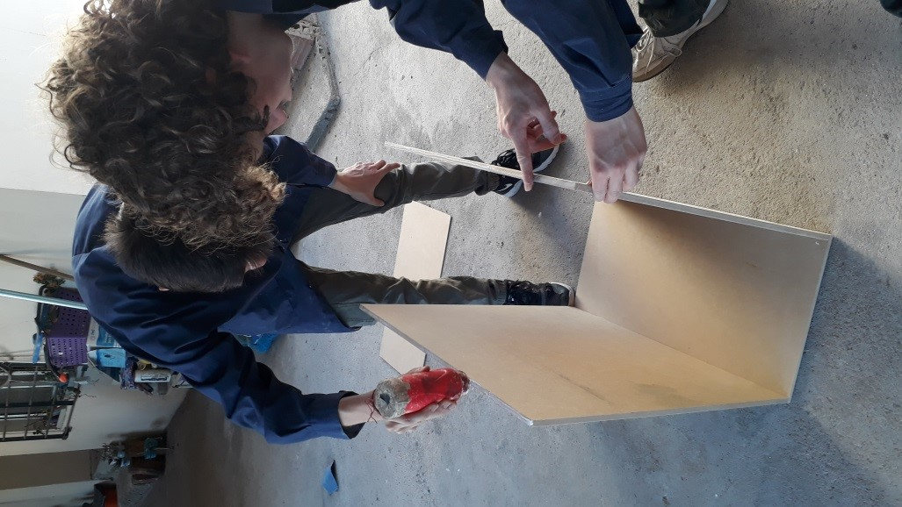

Te presentamos nuestro manual de Armado,para que puedas armar nuestro mueble por tu propia cuenta.
Tambien contamos con la asistencia de tecnicos capacitados para armar el mueble por vos o para asistirte en cualquier duda que tengas.
PASOS PARA EL ARMADO:
-
1-se agrega pegamento en los bordes de las maderas
-
2-con ayuda de un taladro u destornillador se insertan los tornillos en los respectivos orficios(ya vienen hechos desde nuestra fabrica)
-
3-se ensambla el mueble como se muestra en las imagenes de guia
-
4-se clavan clavos con la ayuda de un martillo,para fijar la madera
-
5-se atornillan las bisagras a la puerta y a la pared derecha del mueble
-
6-se atornilla la cerradura a la pared izquierda y a la puerta del mueble
-
7-Se agregara una manija
-
8-Se introducirá en la base un soporte
